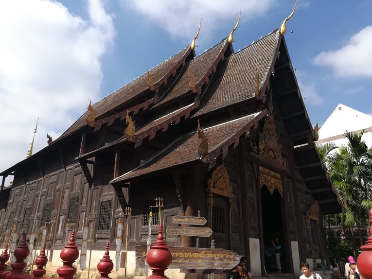
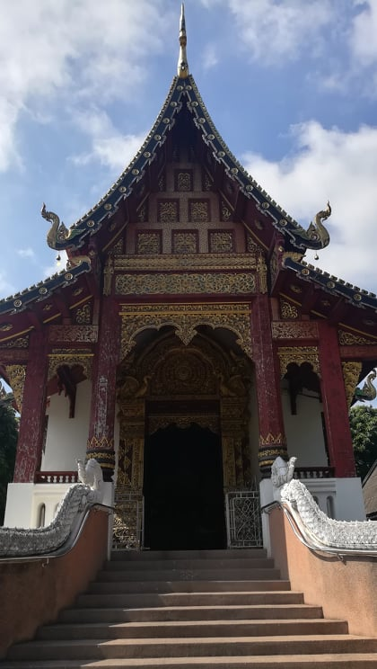
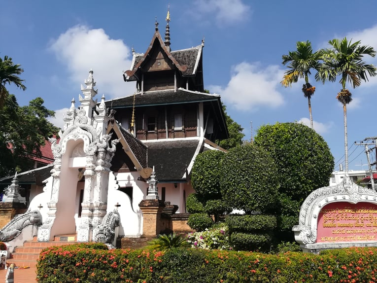
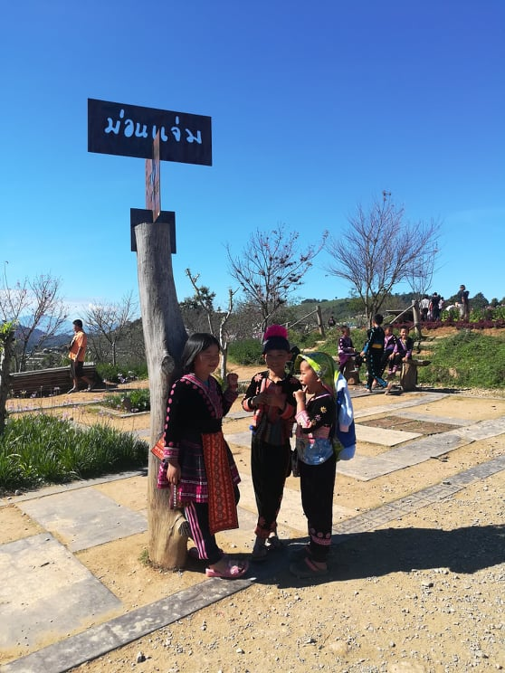
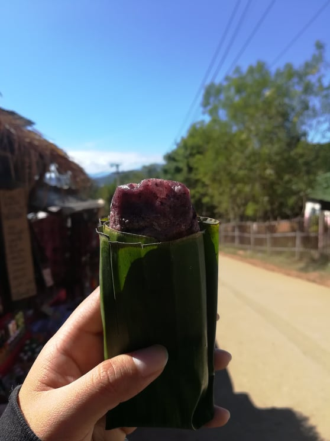
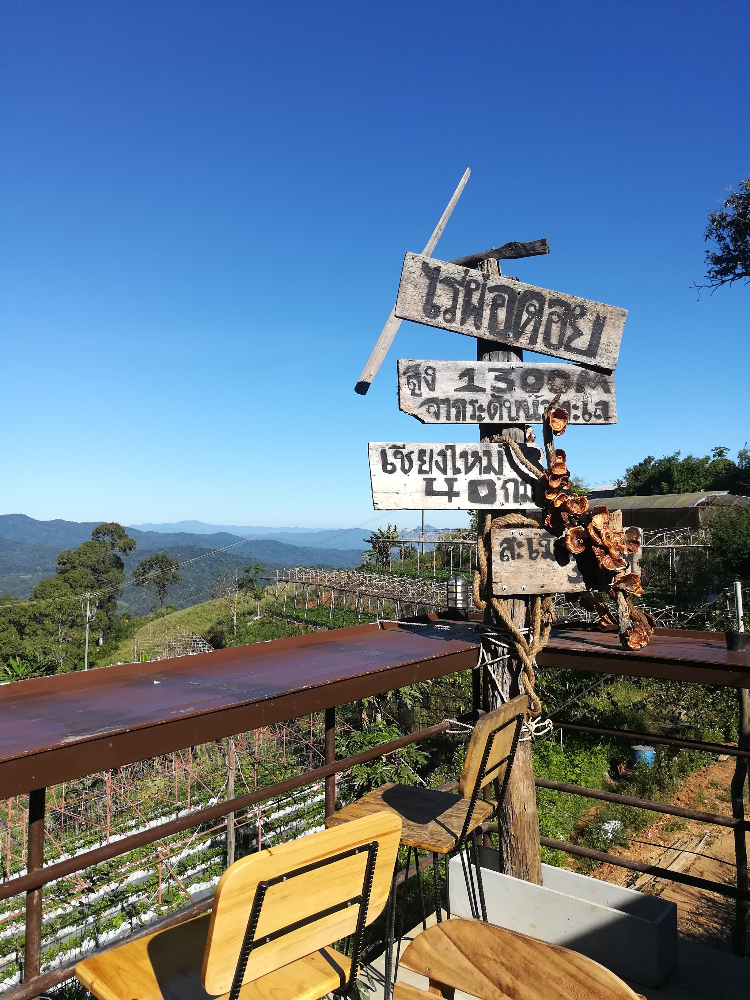

วันที่เดินทาง : 21/12/2018-26/12/2018
การเดินทาง : เครื่องบินขอนแก่น-เชียงใหม่
เช่ารถมอเตอร์ไซค์ขับไปม่อนแจ่ม, ดอยสุเทพ,
สวนสัตว์เชียงใหม่, ไหว้พระรอบเมือง
ค่าใช้จ่าย : ค่าตั๋วเครื่องบินไปกลับ 1200 บาท (ตั๋วโปร)
ค่าแกร๊บคาร์ 300 บาท
ค่าเข้าชมสวนแมลง 80 บาท
ค่าที่พัก 4 คืน 500 บาท
ค่าเช่ารถมอเตอร์ไซค์ 2 วัน 350 บาท
ค่าอื่นๆ 1000 บาท
ทริปนี้เกิดจากความเบลอของเรากับเพื่อนเพราะเห็นว่ามีตั๋วโปรไปเชียงใหม่แค่ 500 กว่าบาท เกิดความหน้ามืดกดจอง
แบบไม่คิด กลายเป็นว่าจองตั๋วเครื่องบินข้ามปีเลย5555 เรา
ขึ้นเครื่องจากขอนแก่นเวลาประมาณ 3 ทุ่ม ใช้เวลาประมาณ
สองชั่วโมงก็ถึงสนามบินเชียงใหม่ เราตัดสินใจจะนอนที่สนาม
บินเพื่อประหยัดค่าโรงแรม แต่ก็นอนไม่หลับ แฮะๆ รอจนถึง
ประมาณตีห้ากว่าๆ จึงตัดสินใจเดินไปเรียกแก๊บคาร์ไปส่ง
โฮสเทลที่เราจองไว้ แพลนเที่ยวที่เชียงใหม่เราวางไว้ว่าจะเริ่ม
เที่ยวในตัวเมืองก่อน วันที่สองขับรถเที่ยวเส้นทางเชียงใหม่-
ม่อนแจ่ม และเว้นไว้เพื่อไปดอยผ้าห่มปก และกลับมาเที่ยวเมือง
และหาซื้อของฝากอีกครั้ง ทริปนี้ถือเป็นการเที่ยวที่ยาวสุด
และหลงทางมากที่สุดเช่นกัน แต่ก็ถือเป็นการหลงทางที่ดี
มากๆ เพราะเราเดินไปเจอร้านอาหารไทยร้านนึงที่อร่อยมากๆ
แต่ก็ลืมชื่อร้านไปแล้วแหละ ><
วันที่ 1 เที่ยวรอบตัวเมืองเชียงใหม่ ไหว้พระรอบเมือง
 |
 |
 |
 |
วันที่ 2 ขับรถเที่ยวเส้นทางม่อนแจ่ม
 |
 |
 |
 |
|